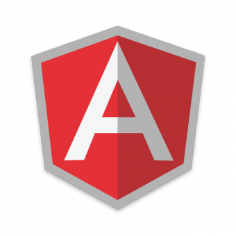
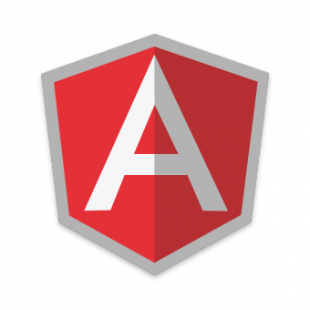

A computação
Meu envolvimento com o que conheço de computação hoje, começou em 2013, quando iniciei o meu Ensino Médio/Técnico. Durante 4 anos, pude conhecer diversas linguagens como: C, Java, PHP e MySQL. E comecei a me interessar bastante pelo desenvolvimento front-end através das aulas semanais de HTML e CSS.


 
